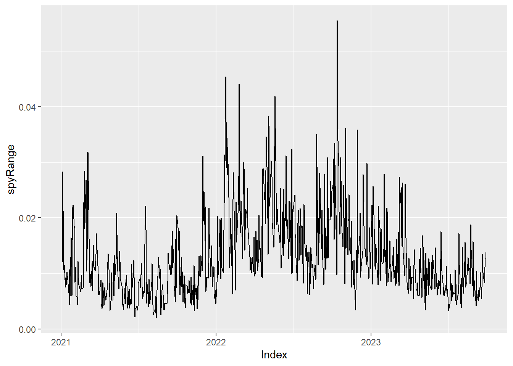
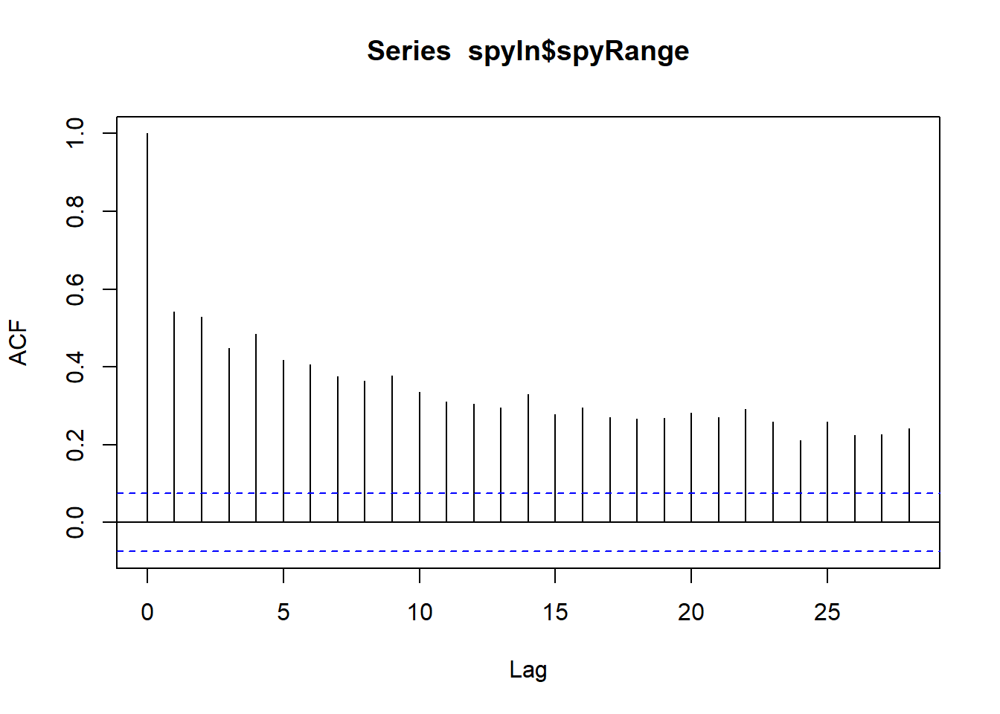
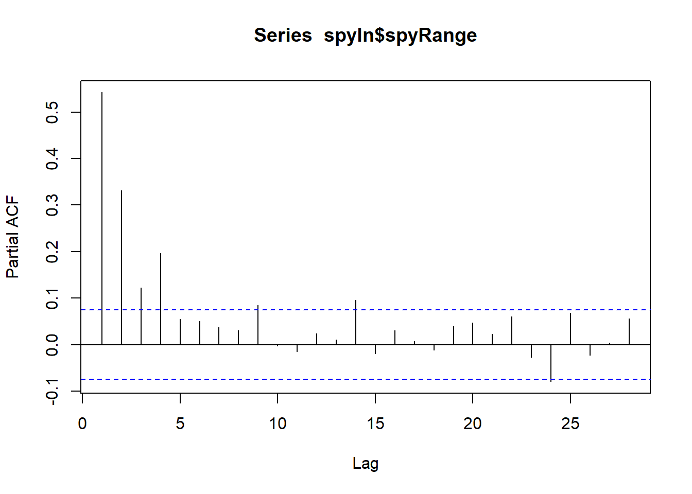

library(tidyverse)-- Attaching packages --------------------------------------- tidyverse 1.3.1 --v ggplot2 3.3.5 v purrr 0.3.4
v tibble 3.2.1 v dplyr 1.1.2
v tidyr 1.2.0 v stringr 1.4.0
v readr 2.1.2 v forcats 0.5.1-- Conflicts ------------------------------------------ tidyverse_conflicts() --
x dplyr::filter() masks stats::filter()
x dplyr::lag() masks stats::lag()library(quantmod)Loading required package: xtsLoading required package: zoo
Attaching package: 'zoo'The following objects are masked from 'package:base':
as.Date, as.Date.numeric
######################### Warning from 'xts' package ##########################
# #
# The dplyr lag() function breaks how base R's lag() function is supposed to #
# work, which breaks lag(my_xts). Calls to lag(my_xts) that you type or #
# source() into this session won't work correctly. #
# #
# Use stats::lag() to make sure you're not using dplyr::lag(), or you can add #
# conflictRules('dplyr', exclude = 'lag') to your .Rprofile to stop #
# dplyr from breaking base R's lag() function. #
# #
# Code in packages is not affected. It's protected by R's namespace mechanism #
# Set `options(xts.warn_dplyr_breaks_lag = FALSE)` to suppress this warning. #
# #
###############################################################################
Attaching package: 'xts'The following objects are masked from 'package:dplyr':
first, lastLoading required package: TTRRegistered S3 method overwritten by 'quantmod':
method from
as.zoo.data.frame zoo spyIn <- quantmod::getSymbols("SPY", from = as.Date("2021/01/01"), to = as.Date("2023/09/30"), periodicity = "daily", src = "yahoo", auto.assign = FALSE)
qqqIn <- quantmod::getSymbols("QQQ", from = as.Date("2021/01/01"), to = as.Date("2023/09/30"), periodicity = "daily", src = "yahoo", auto.assign = FALSE)
iwmIn <- quantmod::getSymbols("IWM", from = as.Date("2021/01/01"), to = as.Date("2023/09/30"), periodicity = "daily", src = "yahoo", auto.assign = FALSE)
spyIn$spyRange <- (spyIn$SPY.High - spyIn$SPY.Low)/ spyIn$SPY.Open
qqqIn$qqqRange <- (qqqIn$QQQ.High - qqqIn$QQQ.Low)/ qqqIn$QQQ.Open
iwmIn$iwmRange <- (iwmIn$IWM.High - iwmIn$IWM.Low)/ iwmIn$IWM.Open
#decomposedSPY <- decompose(spyIn$spyRange)
##decompedSPY = HoltWinters(spyIn$spyRange,beta = FALSE,gamma = FALSE)
#plot(decompedSPY)
autoplot(spyIn$spyRange)
acf(spyIn$spyRange)
pacf(spyIn$spyRange)